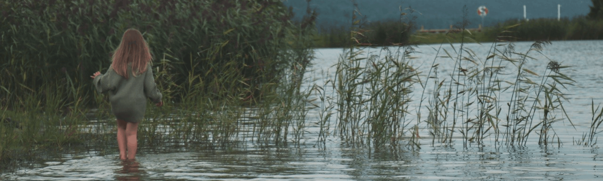
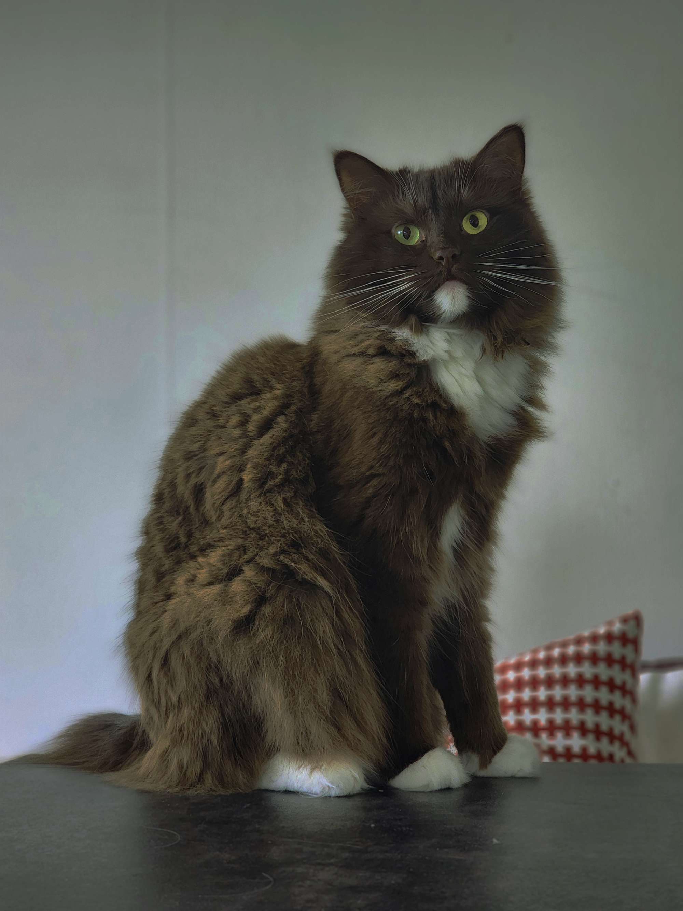
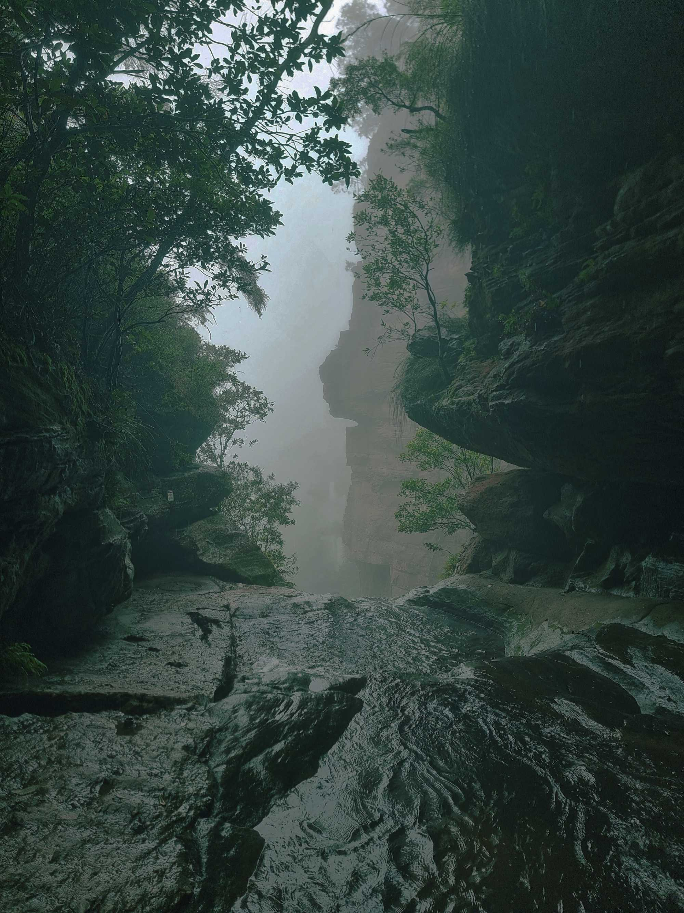
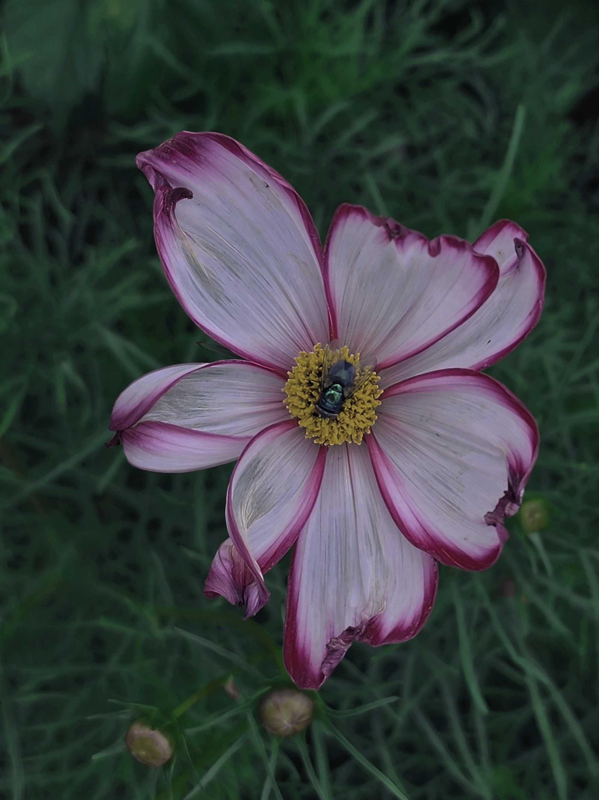

Labroration 1:2
I denna laboration var uppgiften att på en enklare webbplats visa upp 3 olika bilder som bildbehandlats. På undersidan galleri kan ni nu se både orginalbild samt redigerade bilder. Alla bilder har redigerats i photopea. Loggan och faviconen har skapats med hjälp av canva, jag använde sedan photopea för att spara loggan i rätt format samt använde mig av favicon.io för att konventera min bild till rätt format.
Galleri


